The game
What DARK BAGS is
DARK BAGS mixes three things shooter players already love: the extraction of Escape from Tarkov, the Arms Race of Counter-Strike and the shrinking storm of a battle royale. Everyone enters equal, with a knife and 100 health. Every kill hands you the next gun. Loot glows orange on the floor. Exits close as the storm moves in, and you only keep what you carry out.
The twist is the bag. Other players never see what you carry. A rich runner and an empty bluffer look the same, and you choose how big your own bag looks. So nobody knows who the real target is.
- Nothing to install. Open the site in any modern browser, on a phone or a computer.
- Free to play. Practice against bots needs no account and no money, in every mode.
- Short matches. Most rounds last 90 seconds to 4 minutes.
- 17 modes, 20 maps and a 50-floor co-op dungeon called the Descent.
- 11 languages: English, 中文, हिन्दी, Español, Français, العربية, Português, Українська, Русский, Türkçe and Kiswahili.
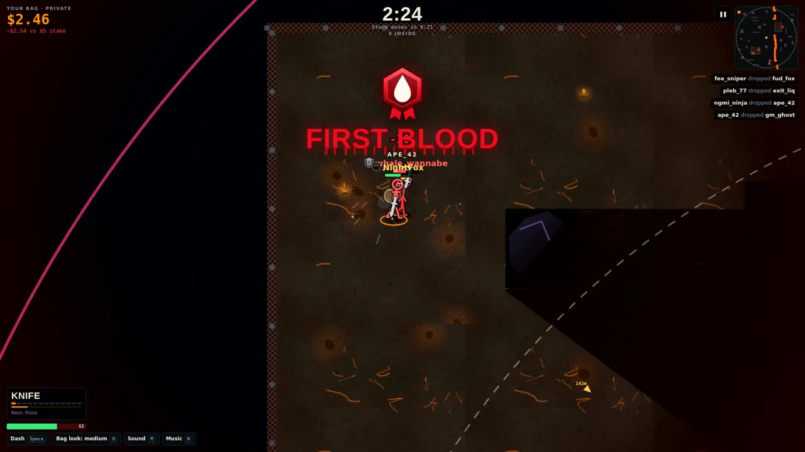
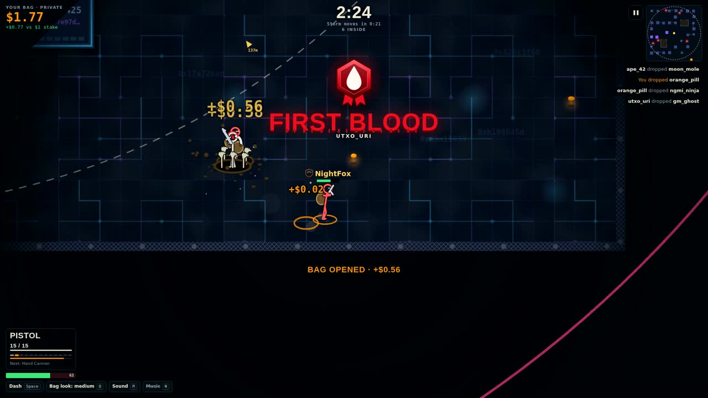
First minutes
Getting started
Open dark-bags.com and press Play. Pick a name and a server region (Europe, US or Asia; the closest one is chosen for you). The language follows your country, and you can change it any time.
Nyx, your guide, walks you through the menus and then plays your first match with you. You can replay her tour from Settings. Your first raids also show short hints: how to move, what loot is and when to head for the exit.
The Play screen has three switches:
- Practice vs bots: free, offline-friendly, runs entirely in your browser. You choose bot difficulty (easy, normal, hard), 2 to 20 runners and a match length of 1 to 10 minutes.
- PvE: the co-op modes, Zombies and the Descent, alone or with up to 3 friends.
- PvP: real players only. A match starts when at least two players are ready. Bots never play in online PvP.
To play online and keep your progress on every device, sign in. You can use Google or Discord (through Cartridge), a Cartridge passkey, or a Starknet wallet: Ready, Braavos, Xverse, OKX, Keplr or MetaMask. Your rank, skins and stats follow your account.
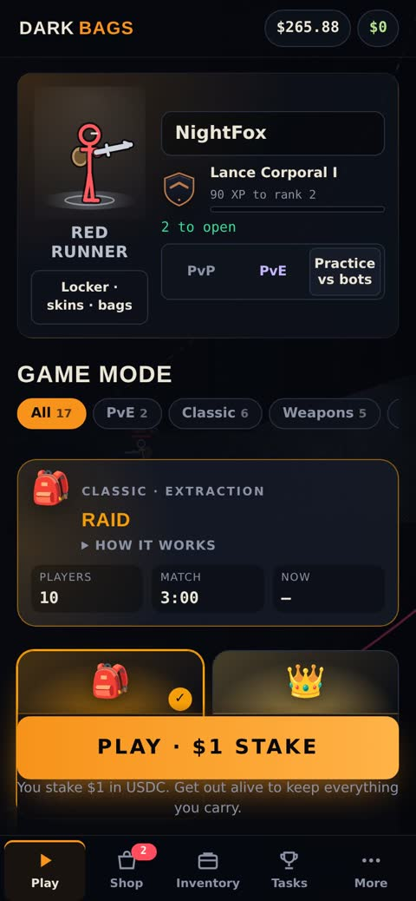
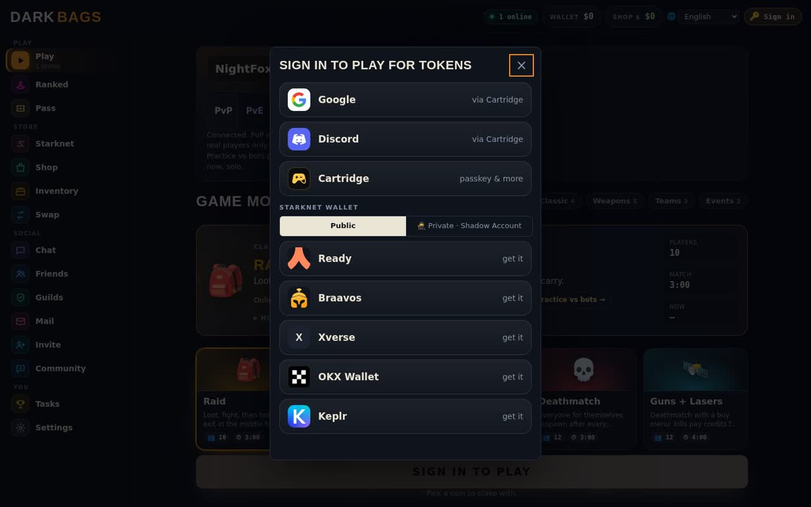
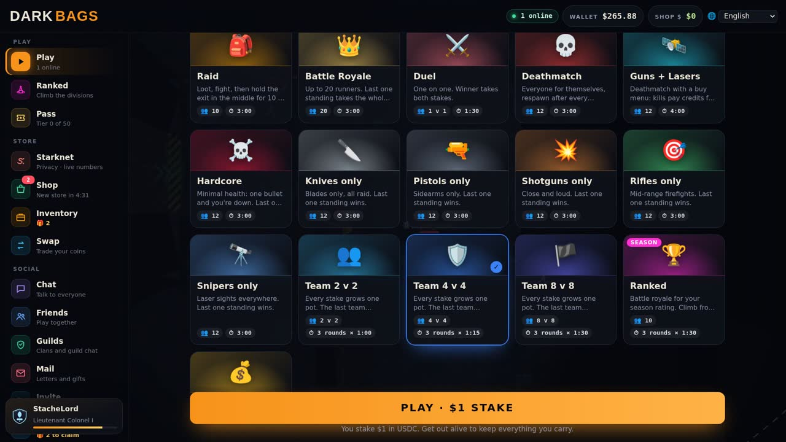
The core loop
How a match works
- Ready roomPick a mode and press Play. Your icon lights up and a countdown starts. While you wait, vote for the map. Change your mind before the start and you leave with nothing lost. Nobody joins once the match is running.
- Arms raceEveryone starts with a knife and 100 health. Each kill moves you one gun up the ladder. Damage and loot add a little progress too. After the laser sniper you go round again.
- StormThe safe circle shrinks in stages and finally closes on one last exit. Outside it you lose health every second, more at every stage. New loot only lands inside the next circle.
- LootOrange dust, stacks and chests. Chests only appear inside walled vaults. A runner who dies drops their whole bag on the floor, marked with a ?.
- BluffPress Q to make your bag look small, medium or fat. It is only a look. Look broke and slip out, or look rich and bait a fight.
- ExtractStand in an open exit for a few seconds. Any hit restarts the count. Get out and you keep everything you carry. Still inside when the clock hits zero, and the bag is lost.
You see about 52 metres around you and never through walls. Runners behind cover are not even sent to your screen. Chain kills within 4 seconds for a double kill, triple kill, rampage and godlike, each with its own medal and announcer line. When you go down you can watch the survivors until the match ends.
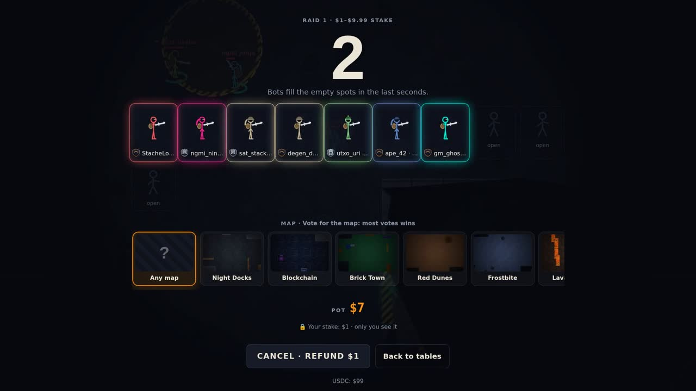
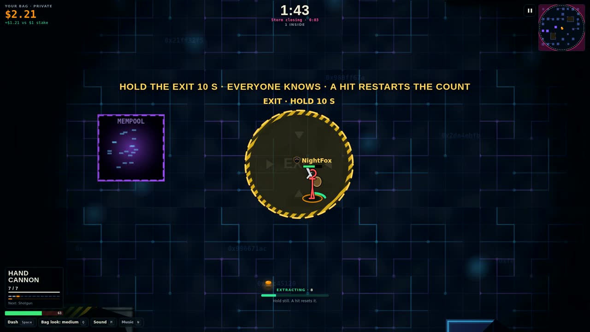
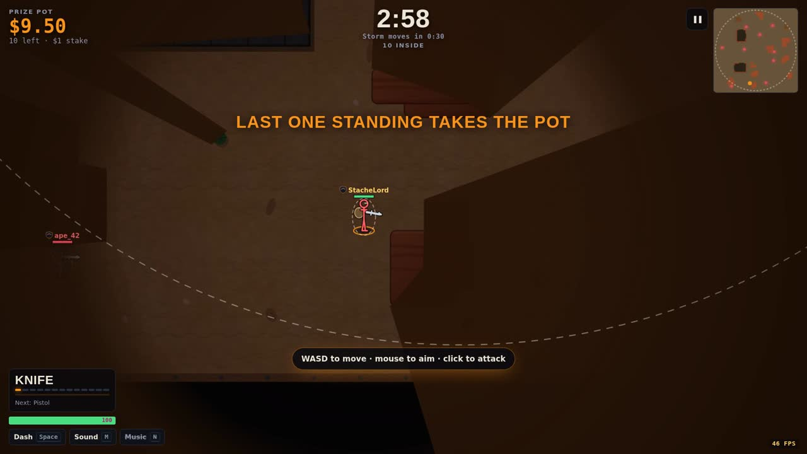
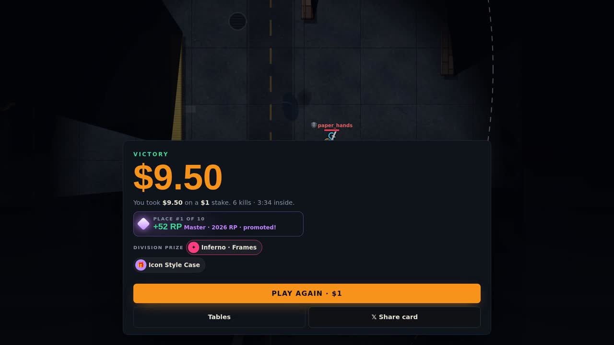
Pick your fight
17 game modes
Every mode runs on the same engine. Every PvP mode also plays against bots in Practice. Modes marked “solo ok” play online alone.
Classic
Raid
The original. Loot, fight, then hold an exit for a few seconds. Keep what you carry out.
Battle Royale
The storm closes in. The last runner standing takes the whole pot.
Duel
One on one. The winner takes both stakes.
Deathmatch
Everyone for themselves. Back in 3 seconds after every death, no storm. Most kills at the whistle wins.
Guns + Lasers
Deathmatch with a buy menu. Kills pay credits for a medkit, a sentry turret or a laser tripmine. Keys 1 2 3.
Hardcore
Battle royale on one hit point. Any hit is a kill.
Weapons only
Knives · Pistols · Shotguns · Rifles · Snipers
Five battle royales with one weapon type for everyone, the whole match. Pure aim and movement.
Teams and ranked
Team 2 v 2 · 4 v 4 · 8 v 8
The last team standing wins and splits the pot equally, fallen teammates included. No friendly fire. Enemies get a red outline, teammates green.
Ranked
Battle royale for your season rating. Climb from Bronze to Neon Legend. Top finishes win a bonus spin.
Events and co-op
Gold Rush
Bags of gold drop all over the quarry. Random guns, quick respawns. Most bags takes the pot as shop credit.
Zombies
20 waves of the dead from every side, each harder than the last, with bosses on waves 10 and 20. No clock. Kills pay credits for turrets, mines and medkits.
The Descent
A 50-floor dungeon with missions, ten bosses and rewards that exist nowhere else. Three difficulties. See the next section.
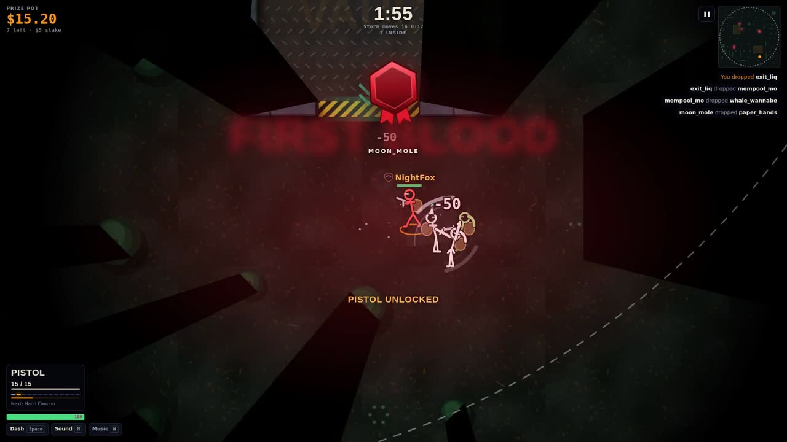
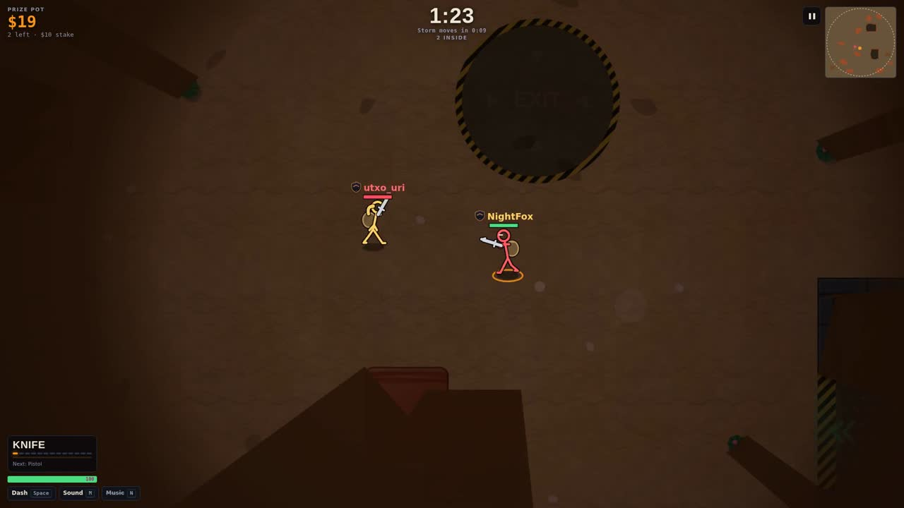
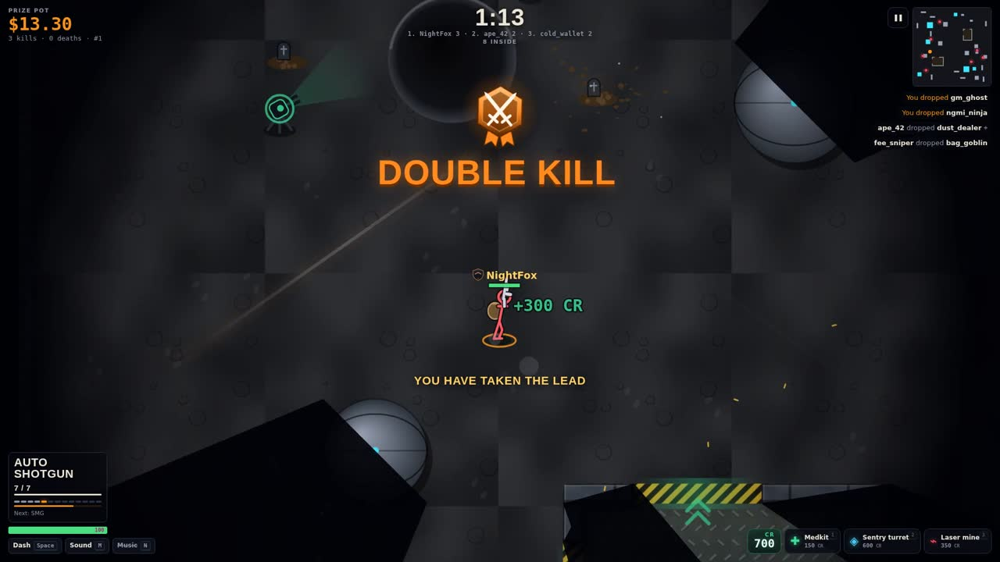
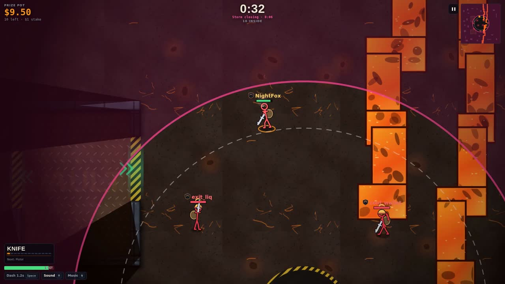
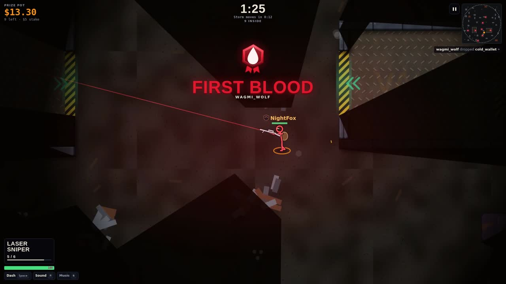
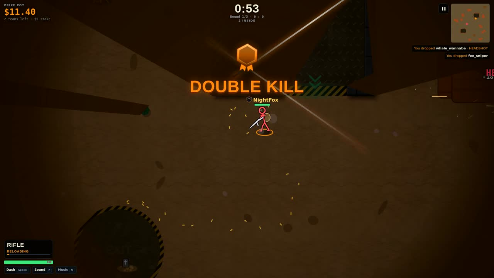
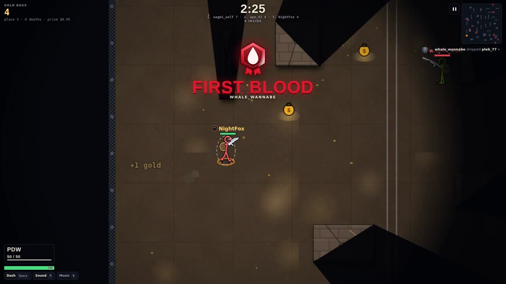
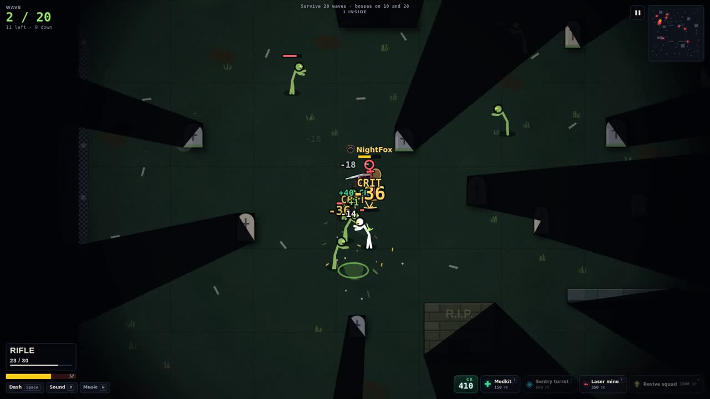
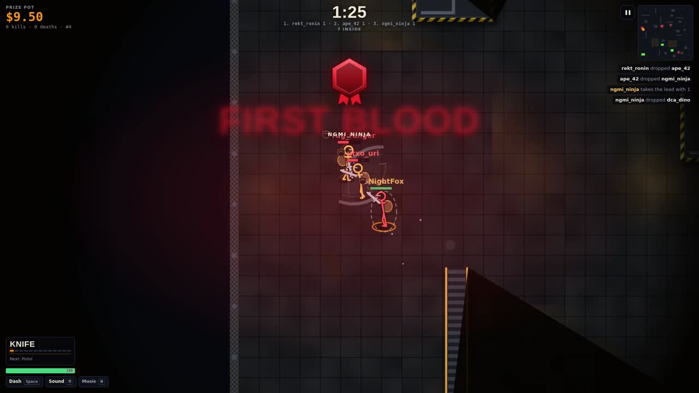
Co-op PvE
The Descent
A co-op dungeon for 1 to 4 runners, 50 floors deep. Every floor is a mission: clear the room, burn the nests, hold the seal or survive the clock. Every 5th floor is a boss, ten in all, with slams, charges, acid volleys, summons and stone skin. Each floor opens with a short animated story scene. Chapters change every 10 floors: Crypt, Ember Halls, Frozen Deep, Void, Throne.
| Class | Weapon | Gear |
|---|---|---|
| Assault | Carbine | Stims |
| Engineer | SMG | Turrets, mines |
| Medic | Shotgun | Field aid, revives |
| Sniper | Sniper rifle | Piercing rounds |
- Coins and gear. Kills pay dungeon coins. Keys 1–6 buy gun upgrades, armour, medkits and class gear. Every class also carries a pistol of your choice (E swaps).
- Camp. Between floors you get 45 seconds to buy gear, then the squad votes: go deeper, or get out with the rewards.
- Rewards. Every 5 floors: weapon skins, banners, kill effects, frames, name effects and armour outfits. A full clear of floor 50 brings the crown frame, the crown name effect and a title. None of these items exist in cases, the shop or trials. You keep them only if you get out alive.
- Difficulty. Easy, Hard and Hardcore (one life). Harder runs hit harder, pay more coins and drop rarer items.
- Tickets. Easy costs 1 ticket, Hard 3, Hardcore 5. Every account gets one free ticket per day (UTC), which does not stack. More tickets cost $0.10 each. Practice runs are free but keep nothing.
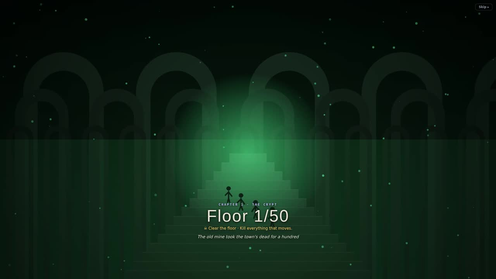
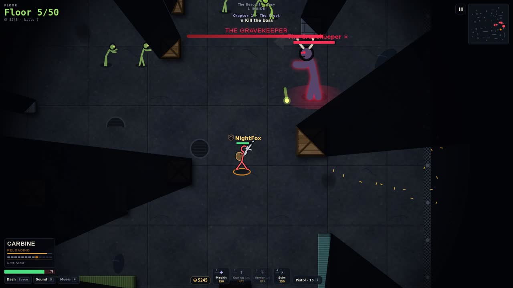
Arms race
Weapons
The ladder climbs one weapon per kill. In respawn modes every death costs one step. Every gun has a magazine and reloads by itself, on PC and phone alike: right away when it runs dry, or after a short pause in shooting when it is half empty. You can't shoot while reloading.
| Weapon | Damage | Magazine | Feel |
|---|---|---|---|
| Knife | 50 | – | Two hits. Only at the start of a match. |
| Pistol | 24 | 15 | Shortest range, quick |
| Hand Cannon | 46 | 7 | Heavy, slow, hits hard |
| Shotgun | 7 × 13 | 6 | Seven pellets, close range |
| Auto Shotgun | 6 × 10 | 7 | Fast pump, wide spread |
| SMG | 11 | 30 | Very fast fire |
| PDW | 9 | 50 | Fastest fire, big magazine |
| Rifle | 18 | 30 | All-rounder, mid range |
| Carbine | 15 | 30 | Tighter, longer reach |
| Scout | 70 | 10 | Light sniper |
| Machine Gun | 14 | 100 | Long reload |
| Magnum Sniper | 100 | 5 | One shot from full health |
| Laser Sniper | 95 | 6 | Longest range; others see its laser |
Where you fight
Maps
20 map styles, each with its own layout, all set at night. Every match generates a fresh layout with walled vaults, cover and a few exits, so no two raids play the same. The room votes for the style before the drop.
Keep coming back
Progress and seasons
Career rank. Every match pays rank XP, win or lose: for showing up, kills, damage, time alive, first blood, multi-kills, a full lap of the arsenal and getting out. There are 90 ranks, from Lance Corporal I to Legend, each with its own insignia on your name tag.
Achievements. Over 100 achievements for raids, extractions, kills, multi-kills, time played, wins, ranks and your collection. Each one pays XP once and unlocks its name as a title you can show over your name.
Ranked seasons. One season per calendar month. Ranked matches move your rating through seven divisions, and reaching a division pays its prize once a season:
Battle pass. Each month has its own theme and items: three armour sets that change a runner's whole silhouette, two weapon finishes and two turret skins. When the month ends they are gone for good; owners keep them. Every season has 50 tiers that fill with XP from every match. The free track rewards everyone; the premium track ($9.99) adds a reward on every tier.
Daily play. A daily calendar, daily and weekly tasks, and the fortune wheel with free spins.
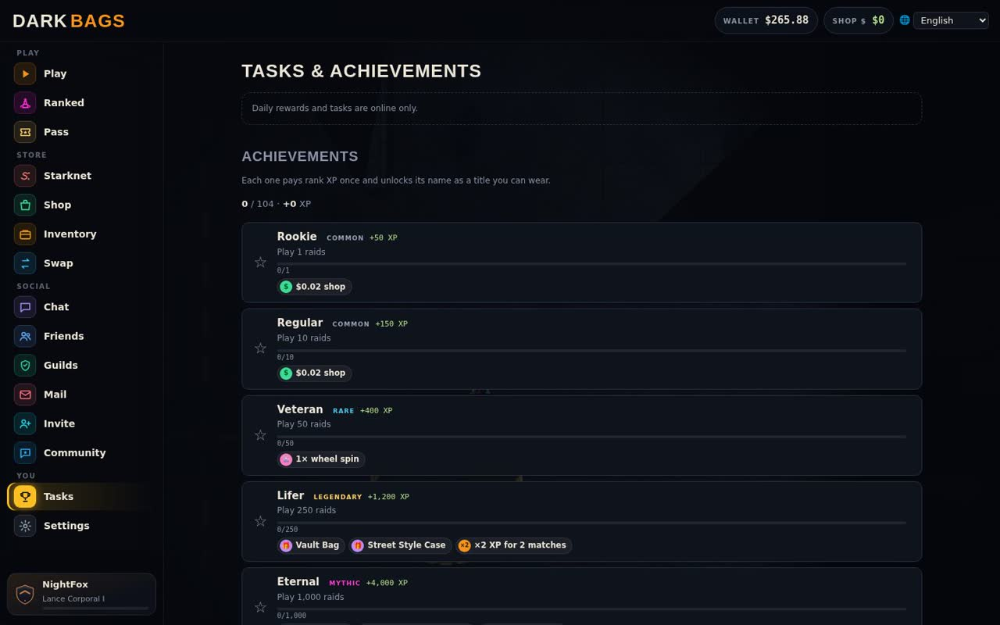
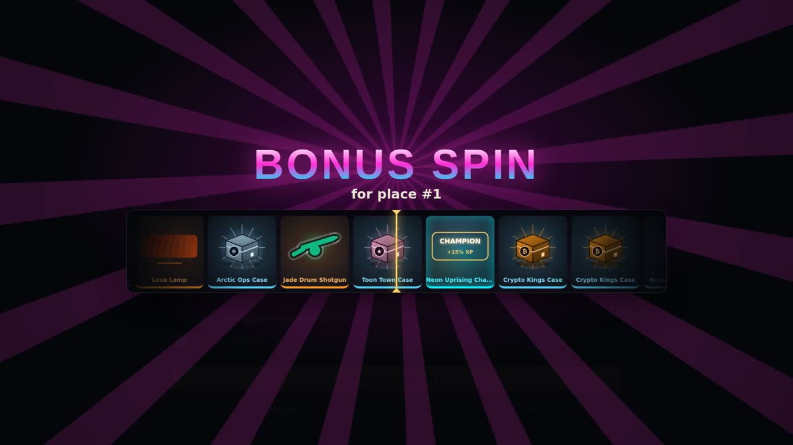
Locker
Skins and style
Your runner is a stick figure in the spirit of Gravity Defied, and can be him or her. Dress it in outfits across six rarities, Common, Rare, Epic, Legendary, Mythic and Exotic: crypto memes, comic heroes, cartoon animals, sci-fi and multiverse gods, all original. Add headgear, capes, auras and particles.
Weapon skins come in 24 finishes on every weapon, from camo to galaxy, plasma and prism. The rarer the finish, the wilder the model: a knife can become a katana, scythe or energy sword, and a rifle a plasma rifle or railgun. From Rare up, a skin also paints its tracers, muzzle flash and laser sight. Style items add animated frames, banners, kill effects and name effects.
Skins come from cases, the daily featured store, the battle pass, ranked prizes and the Descent. Every case shows its exact odds before you open it, and the roll happens on the server. Pity guarantees a better drop after a run of bad luck, and you get items you don't own yet while that rarity still has any left. A few Exotics are limited editions, numbered as they drop (for example #12/100). Opening is a show: the reel spins, glows through the rarities and bursts in the colour of your best drop.
Optional
Stakes and your wallet
Stakes are optional. Practice vs bots in every mode, your free daily Descent ticket and every progression system work without them. Online matches are played for a stake, from $0.10.
- Everything is shown in dollars. You can stake with USDC, USDT, STRK, ETH, Bitcoin on Starknet (WBTC and other BTC tokens) or STACHE. The dollar stake is converted at the moment you press Ready, and winnings come back in the same coin at that same rate, so price moves during a match change nothing.
- Your stake is private. Only you see your own stake. The ready room shows only the total pot.
- Where the stake goes. In a Raid, part of it rides in your bag and part is scattered on the map as loot. In pot modes, the stakes form one prize pot. A 5% fee is taken from every stake; part of it funds bonus “golden” rounds at that table.
- Deposits and cash-outs. Deposit from your wallet and cash out at any time. Cash-outs only ever go to the address you signed in with.
- Private mode (Shadow Account). With Ready or Xverse you can deposit and cash out through Starknet's STRK20 privacy pool. Observers on the chain see an encrypted note, not who paid or how much. In-game swaps between coins never touch the chain.
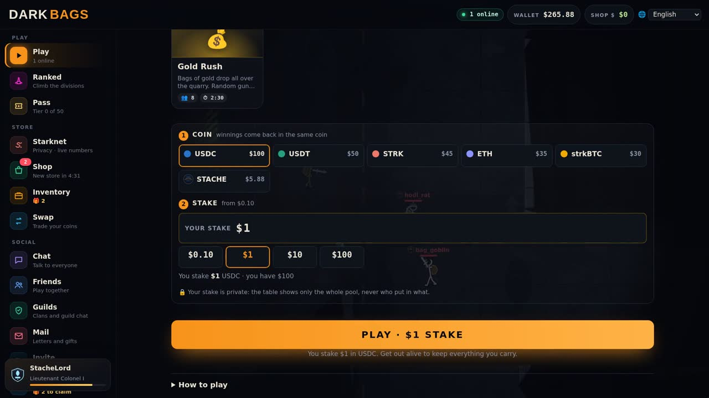
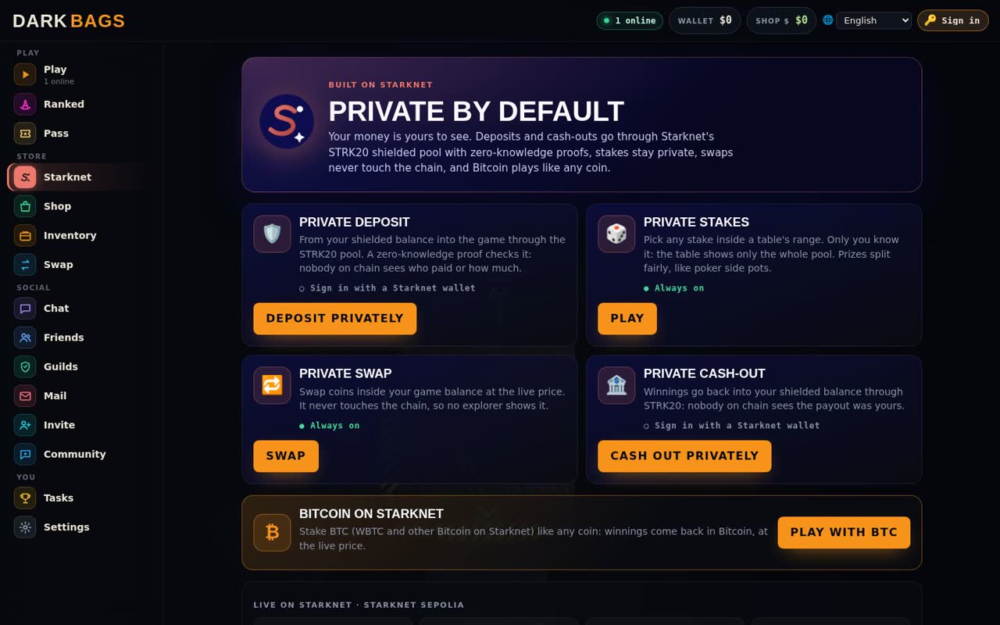
Trust
Fair play and privacy
- The server decides. Every hit, pickup, drop and payout is decided on the game server, not in your browser, and every match's books balance to a tenth of a cent.
- Your bag stays yours. The server never sends another runner's bag to your screen. The public kill feed says who dropped whom, never amounts.
- No wallhacks. The server only sends you runners you could actually see, by distance and line of sight. A modified client has nothing hidden to reveal.
- Humans only online. Bots play only in Practice, in your own browser. The house never puts a player of its own into an online match.
- Fair bots. In Practice, bots leave you alone for the first seconds, never gang up on one player and hit softer than a human would.
- Published odds. Every case shows its odds and is rolled on the server, with pity on every case.
Hands on
Controls and settings
| Action | PC | Phone |
|---|---|---|
| Move | W A S D | Left thumb |
| Aim and attack | Mouse, click | Right thumb, FIRE |
| Dash | Space | DASH |
| Bag look | Q | BAG |
| Reload now | Automatic | ↻ |
| Buy menu | 1 2 3 (Descent 1–6) | Buttons |
| Swap pistol (Descent) | E | Button |
| Scoreboard | Tab | ☰ button |
| Voice chat | K | Settings |
| Sound · music | M · N | Settings |
| Pause menu | Esc | ❚❚ button |
Settings cover graphics quality (Auto lowers detail when frames get slow), screen shake, whose skins to draw, names and titles over runners, touch stick size, a left-handed layout, separate volumes for effects and music, the announcer, voice chat and language.
On phones, play sideways. If the browser inside your wallet app won't rotate, tap “Can't rotate? Turn the game” or switch on Turned layout in Settings, and the game turns sideways inside the page.
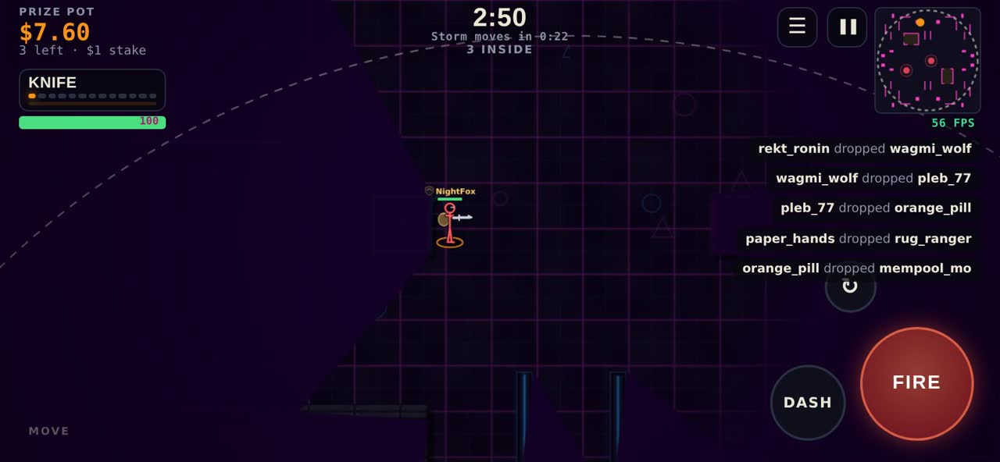
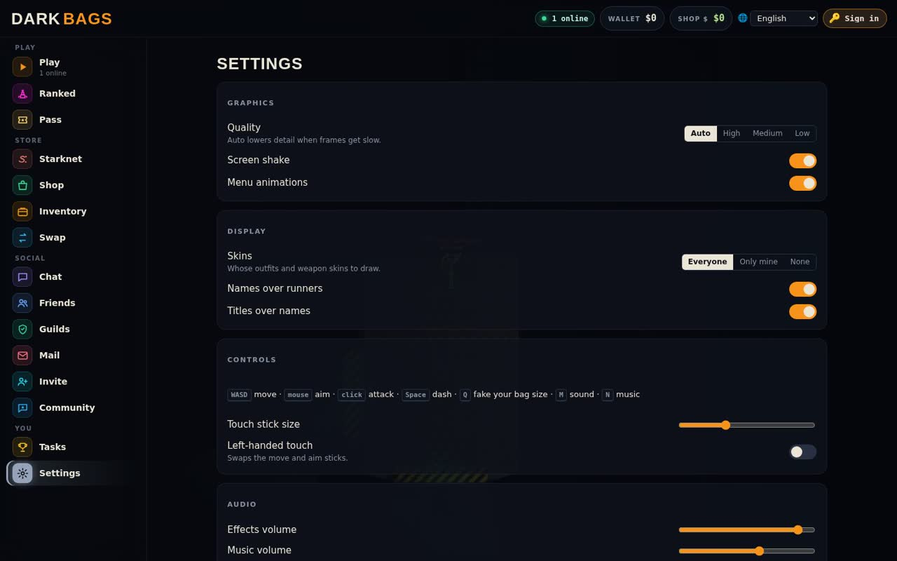
Ears on
Sound and music
The soundtrack is pixel-style chiptune generated live in your browser: 5 menu tracks and 8 match tracks. Pick your favourite for the menu and for matches separately in Settings, or let them take turns. In a match the music builds with each storm stage and hits harder when enemies are close or you are extracting.
Gunshots, hits, ricochets, footsteps, coins and the storm are all synthesised, placed in stereo by where they happen. A recorded announcer calls first blood, multi-kills, victory, extraction and the final circle in English, Ukrainian, Spanish, French or Portuguese, and the music ducks under it.
Read this
Stay safe
- We will never ask for your seed phrase, private key or password. Nobody from the team will DM you first about money.
- Cash-outs only go to the address you signed in with. Nobody can send them anywhere else.
- The game is in open beta. Expect changes, balance updates and the occasional bug. Report anything strange in Telegram.
- Stakes are 18+ and only where legal. Play for fun, set your own limits, and take breaks.
Short answers
Questions
Is it free? Yes. Practice vs bots in every mode, one Descent ticket a day and every progression system are free. Online stakes, cases and the premium pass are optional.
Do I need a wallet? No. Practice needs nothing. To play online you can sign in with Google, Discord or a passkey through Cartridge.
Nobody is online. What can I play? Practice vs bots in any mode starts right away. Zombies and the Descent also start online with just you.
Does my progress carry over between phone and PC? Yes, when you sign in with the same account.
Do skins make me stronger? No. They are looks only.
It lags. What can I do? Pick the server with the lowest ping (Europe, US or Asia), set Quality to Auto and close other heavy tabs.
Play together
Friends and guilds
While you wait, the menus show where people are playing, so you can join a room that is about to start.